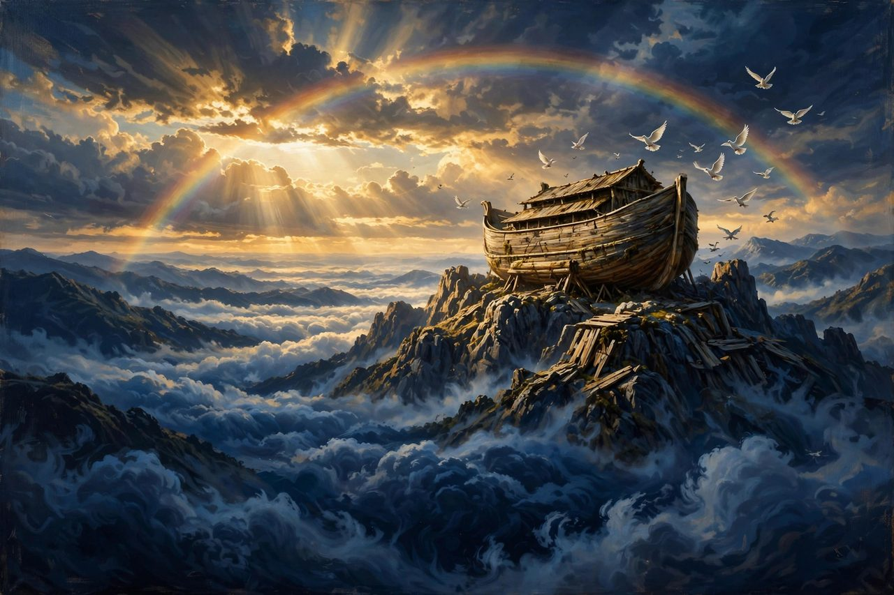
Again and again in the Old Testament, God meets His people on high places. Mountains are where He gives His Law, receives worship, displays His glory, and speaks His promises — because a mountain lifts a man out of the ordinary and reminds him that God is above him, holy and near at once. From Ararat to Zion, the pattern holds: men do not climb their way up to God; God comes down to the mountain to meet men where they are. Every one of these peaks tells part of that story, and every one of them points past itself — to Christ, to the church, and to the mountain still to come.
The Mountains of Ararat
Scripture: Genesis 8:4, 17 The story: After the flood, the ark "rested on the mountains of Ararat" — a range in what is now eastern Turkey, not one single peak. From that high ground, Noah's family and every living creature came down to begin the world again under God's covenant of the rainbow. The meaning: Ararat is the mountain of the new beginning. Judgment was real and total, yet God preserved a remnant and started over — He is the God who remains faithful when everything else is washed away. What it points to: It points to every fresh start God gives after judgment, and ahead to the new creation itself, where the world is made new not by water but by the work of Christ.
Mount Moriah
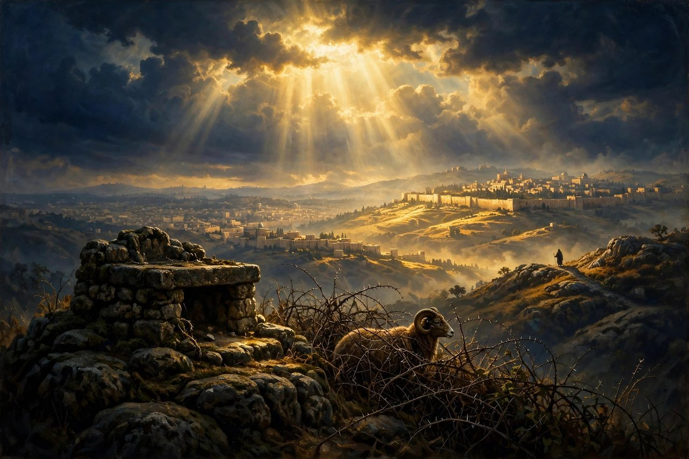
Scripture: Genesis 22:2, 14; 2 Chronicles 3:1 The story: God sent Abraham to Moriah to offer his son Isaac, then stopped his hand and provided a ram caught in a thicket, so Abraham called the place "The LORD will provide." Centuries later Solomon built the temple on that same mountain in Jerusalem, the place where sacrifices would be offered for a thousand years. The meaning: On Moriah, God teaches that He does not want human sacrifice — He provides the substitute Himself. The place of Abraham's hardest obedience became the permanent place of worship and atonement. What it points to: It points straight to Jesus, the Lamb God provided on a hill in the same city, offered once for all where Isaac was spared. God did for the world on Calvary what He pictured for Abraham on Moriah.Mount Sinai / Horeb
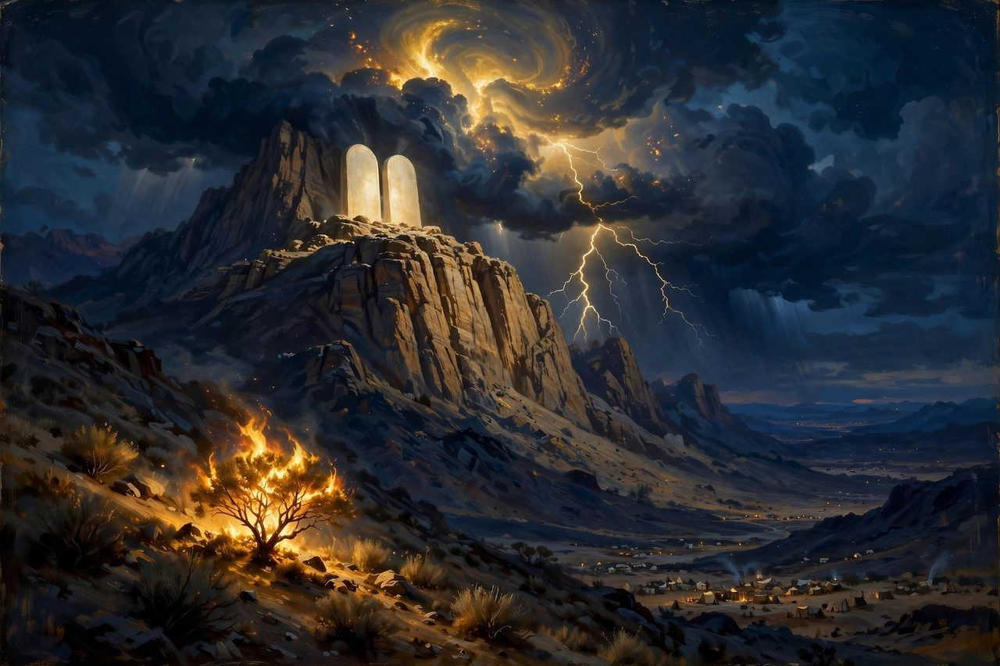
Scripture: Exodus 3:1–6; 19–20; Deuteronomy 5; 1 Kings 19:8–13 The story: At Horeb, the mountain of God, Moses met the LORD in the burning bush and was commissioned to lead Israel out of Egypt. Israel then camped at Sinai while the mountain smoked and shook, and God gave the Ten Commandments and the covenant Law amid thunder and trumpet blast. Generations later, the prophet Elijah fled back to Horeb in despair, and God passed by — not in the wind, earthquake, or fire, but in "the sound of a low whisper," and recommissioned him. The meaning: Sinai shows both faces of God: He is holy and unapproachable in glory, and He is gentle enough to speak to a broken, suicidal-hearted prophet in a whisper. The same mountain holds the Law that condemns and the voice that restores. What it points to: Sinai points to our need for a mediator — Israel begged Moses to stand between them and God's voice, and Christ is the final Mediator of a better covenant (Hebrews 12:18–24). It also points to every believer who has heard God not in spectacle but in the quiet whisper of His Word.Mount Hor
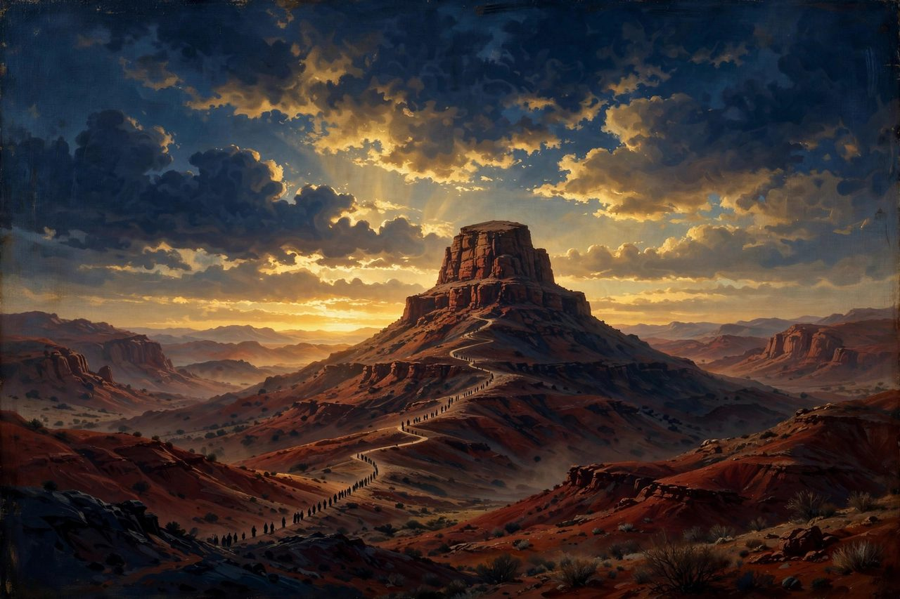
Scripture: Numbers 20:22–29; 33:37–39 The story: On the border of Edom, Moses led Aaron up Mount Hor before all the congregation. There Aaron's priestly garments were taken off and placed on his son Eleazar, and Aaron died on the mountaintop at 123 years old, and Israel mourned him thirty days. The meaning: Hor is a mountain of holy endings. Even the first high priest was mortal, and his office had to pass to another — God buries His servants, but His work and His covenant go on without pause. What it points to: It points ahead to the need for a priest who never dies. Aaron's succession on Hor quietly preaches Hebrews: we need Jesus, the great high priest "who continues forever" and never hands off His garments (Hebrews 7:23–24).Mount Nebo / Pisgah
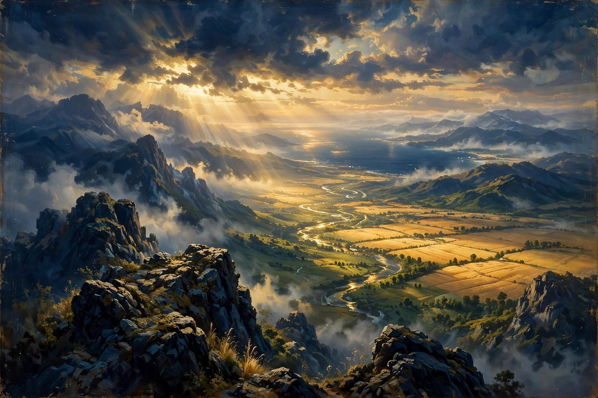
Scripture: Numbers 27:12; Deuteronomy 32:49; 34:1–5 The story: In the Abarim range east of the Jordan, God took Moses up Mount Nebo, to the top of Pisgah, and showed him the whole Promised Land spread out below. Moses viewed the inheritance his people would receive, then died there in Moab at 120, and God Himself buried him in the valley opposite, with no grave men could find. The meaning: Nebo is the mountain of longing and trust. Moses saw with his eyes what his feet would never touch, and he died content because God's promise to Israel mattered more to him than his own arrival. What it points to: It points to the Christian hope itself — "These all died in faith, not having received the things promised, but having seen them and greeted them from afar" (Hebrews 11:13). Every believer who dies trusting promises not yet seen stands, in a sense, on Nebo.Mount Peor
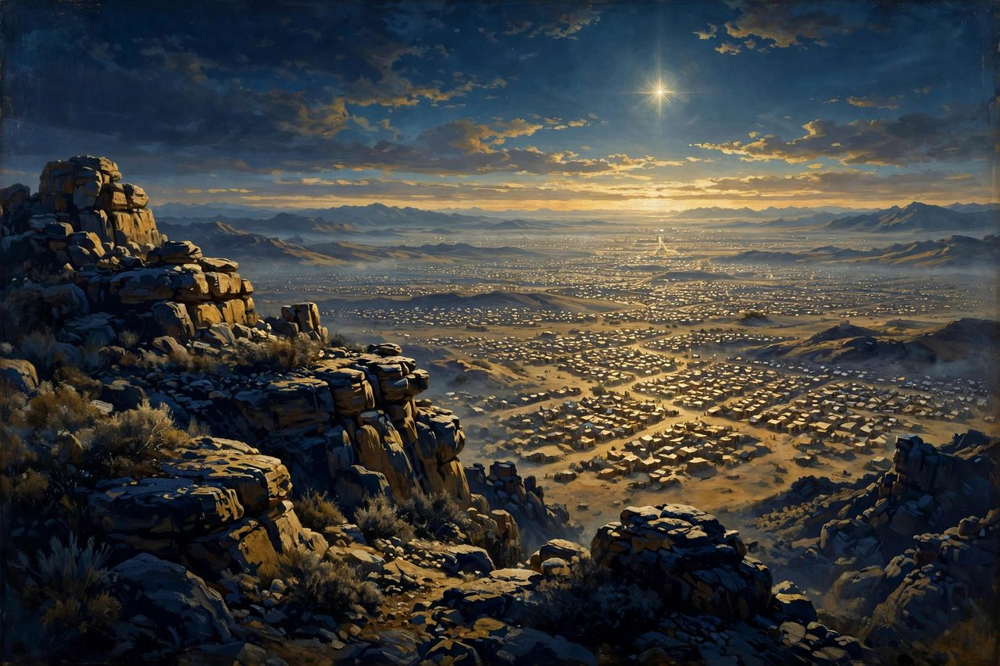
Scripture: Numbers 23:28–24:9 The story: Balak, king of Moab, brought the hired prophet Balaam to the top of Peor, which overlooks the desert, hoping he would curse Israel camped below. Instead, Balaam blessed Israel a third time, declaring, "How lovely are your tents, O Jacob," and foretelling a Star who would come out of Jacob. The meaning: On Peor, God proved that no curse can land where He has decided to bless. Even a greedy prophet-for-hire could only speak what God put in his mouth. What it points to: It points to the star of Jacob — Christ Himself — and to the secure position of God's people in Him, against whom no weapon of cursing prospers.Mount Gerizim
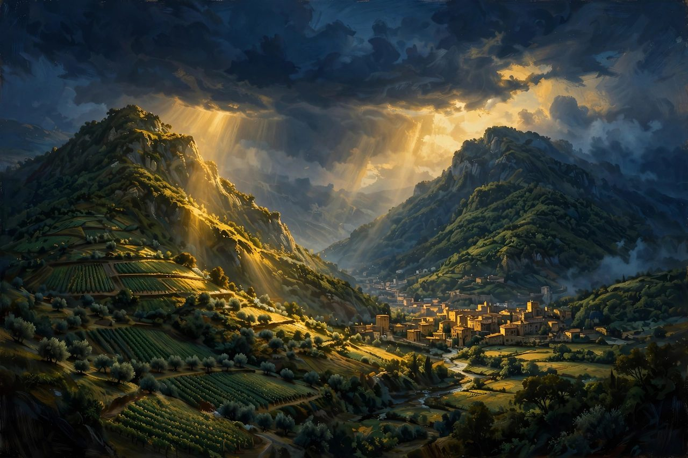
Scripture: Deuteronomy 11:29; 27:12; Joshua 8:33; Judges 9:7; John 4:20 The story: Gerizim was the mountain of blessing: six tribes stood on it to bless the people when Israel entered Canaan, answering the curses from Ebal across the valley. From its slope Jotham cried out his parable against Abimelech and Shechem. The Samaritans later built their temple on Gerizim, and the woman at the well pointed to it when she asked Jesus where men ought to worship. The meaning: Gerizim stands for the blessing side of the covenant — the good God delights to speak over His people. But its long rivalry with Jerusalem also shows how easily worship becomes a tribal argument about place. What it points to: It points to Jesus' answer to the Samaritan woman: the hour comes when worship will be tied to neither Gerizim nor Jerusalem, but offered "in spirit and truth" (John 4:21–24) — wherever Christ is.Mount Ebal
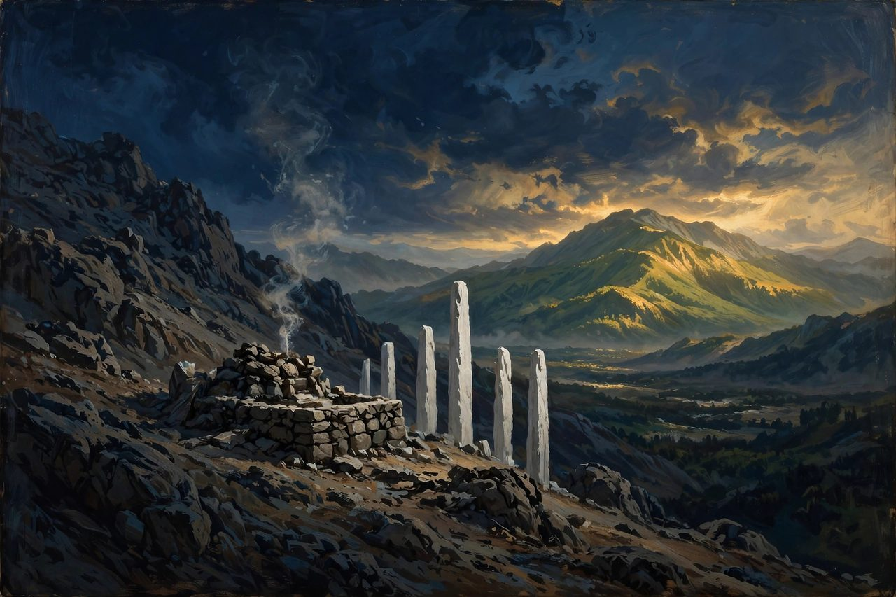
Scripture: Deuteronomy 27:4–13; Joshua 8:30–35 The story: On Ebal, the mountain of the curse, Joshua built an altar of uncut stones, offered burnt offerings, and wrote the Law on plastered stones in large letters. Six tribes stood on Ebal to pronounce the curses of the covenant while the Levites read every word — blessings and curses — with all Israel listening in the valley between. The meaning: Ebal teaches that God's Word cuts both ways and hides nothing: the curse for disobedience is as real as the blessing for obedience, and it is spoken out loud, in public, before heaven and earth. What it points to: It points to the cross, where Christ "became a curse for us" to redeem us from the curse Ebal proclaimed (Galatians 3:13). The altar standing on the mountain of the curse already whispered that God would deal with the curse Himself.Mount Gilboa
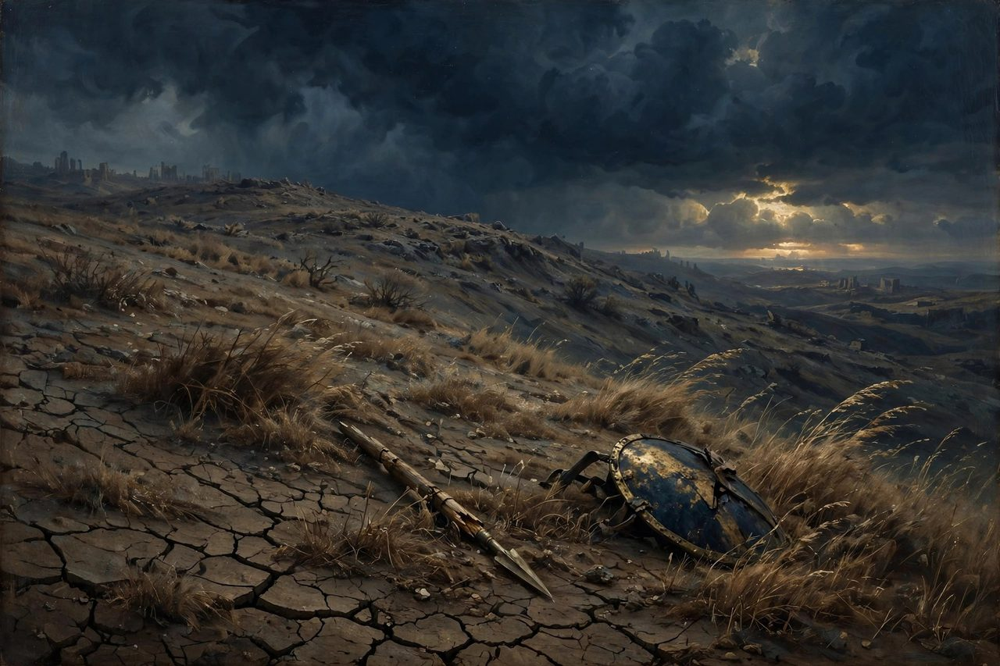
Scripture: 1 Samuel 28:4; 31:1–6; 2 Samuel 1:21 The story: On the slopes of Mount Gilboa, the Philistines overran Israel, and King Saul and his three sons — including Jonathan — were killed in the rout. When David heard the news, he lamented over Gilboa, crying, "You mountains of Gilboa, let there be no dew or rain upon you." The meaning: Gilboa is the mountain of a wasted anointing. Saul began as God's chosen king and ended in defeat and shame on this ridge — a standing warning that it is possible to start in God's favor and finish in rebellion. What it points to: It points to the human condition: kings and kingdoms fall on their Gilboas because of sin. And David's grief over it — mourning even the king who hunted him — points ahead to Christ, who wept over the very city that would reject Him.The Hill Country of Ephraim (Mount Ephraim)
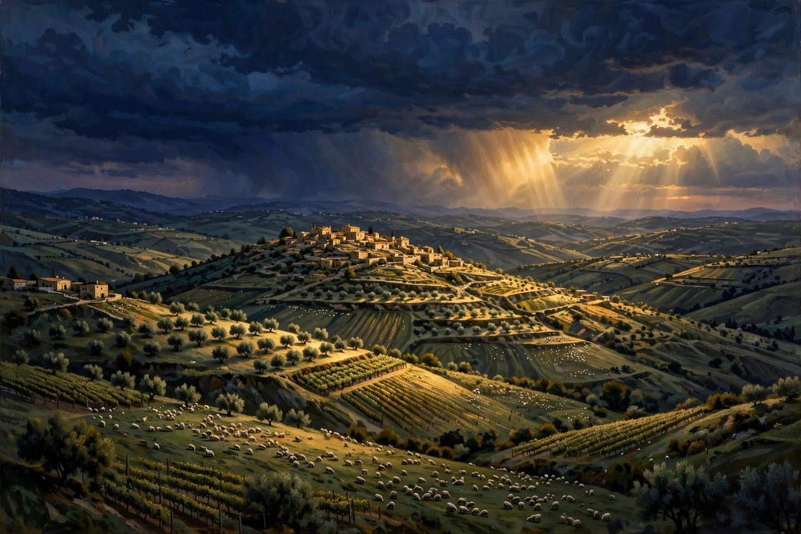
Scripture: Joshua 20:7; 24:33; Judges 17–19; 1 Samuel 1:1; 9:4 The story: The central hill country of Ephraim was Israel's heartland and its troubled conscience. Joshua and Eleazar were buried there; Micah built his idol shrine there; the Levite's concubine tragedy and the civil war with Benjamin began there; and in Ramah, in these hills, Hannah prayed for a son and Samuel was born, raised, and later anointed kings from this country. The meaning: Ephraim's hills show that God's greatest work happens in ordinary, morally mixed places — the same hills that produced idolatry produced the prophet Samuel. The setting does not determine the story; God's grace does. What it points to: It points to Ramah's answered prayer and to Samuel, the last judge and kingmaker, whose whole ministry from these hills prepared Israel for David — and, beyond David, for David's greater Son.Mount Carmel
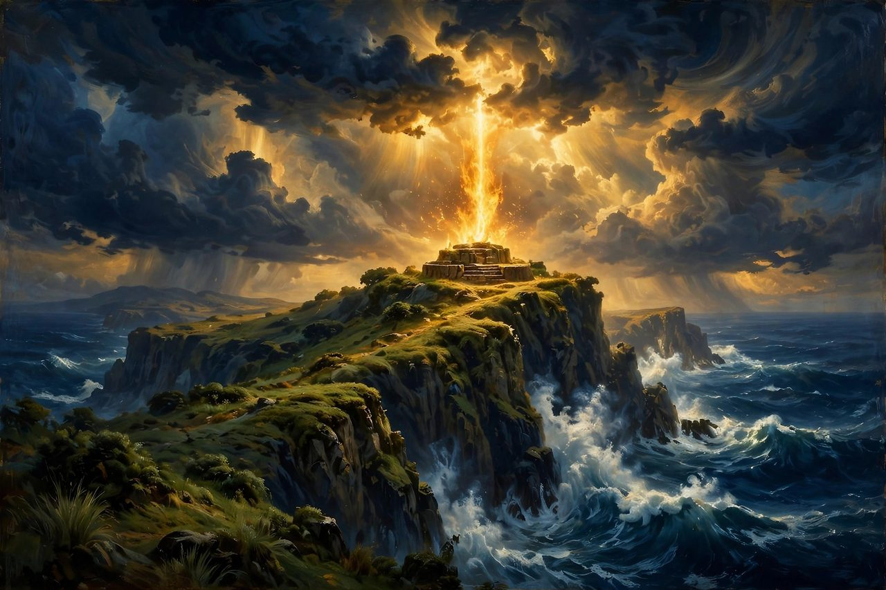
Scripture: 1 Kings 18:19–40; 2 Kings 2:25; 4:25 The story: On Carmel, the green ridge jutting into the Mediterranean, Elijah faced 450 prophets of Baal in a public contest. After Baal's prophets cried out all day to silence, Elijah repaired the LORD's altar, drenched the sacrifice in water, prayed — and fire fell from heaven, consuming the offering, the wood, the stones, and the dust, until all the people fell on their faces crying, "The LORD, he is God." Elisha, Elijah's successor, also had a dwelling on Carmel. The meaning: Carmel is the mountain of decision. Elijah's question still echoes: "How long will you go limping between two different opinions? If the LORD is God, follow him." God does not share His throne, and He answers His people's prayer by unmistakable fire. What it points to: It points to every generation's choice between the living God and the idols of its age. It also points to Christ, who ended all limping between two opinions by His own once-for-all sacrifice — no altar contest needed ever again.Mount Zion
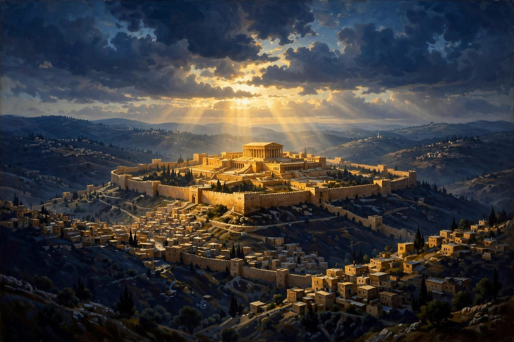
Scripture: 2 Samuel 5:7; Psalm 48:1–2; 125:1–2; 133; Isaiah 2:2–3; Hebrews 12:22 The story: Zion began as the Jebusite stronghold David captured and made his city, then became the hill of the temple and the name Scripture gives to God's dwelling place with His people. The Psalms sing of it constantly — "Those who trust in the LORD are like Mount Zion, which cannot be moved" — and Isaiah foresaw the day when all nations would stream to it. The meaning: Zion is the mountain of God's settled presence and His people's security. It is not the tallest mountain in Israel — it matters because God chose it, which is the story of grace everywhere: God dwells where He chooses, not where men are impressed. What it points to: It points directly to the church and beyond it: "You have come to Mount Zion and to the city of the living God, the heavenly Jerusalem" (Hebrews 12:22). Every believer already belongs to Zion, and one day will see it face to face.Mount Hermon
Scripture: Deuteronomy 3:9; Psalm 42:6; 89:12; 133:3; Song of Solomon 4:8; Matthew 17:1 (tradition) The story: Hermon is the great snow-capped giant on Israel's northern border, called Sirion by the Sidonians and Senir by the Amorites, its peaks visible for a hundred miles. The psalmist remembered God "from the land of Jordan and of Hermon" in his exile, and its heavy dew became Scripture's picture of blessing. Tradition holds that Hermon was the mountain of Jesus' transfiguration; scholars debate this, with others favoring Mount Tabor. The meaning: Hermon teaches of abundance from above — its dew fell whether the valleys deserved it or not, watering what could never water itself. "It is like the dew of Hermon," says Psalm 133, speaking of the blessing of brothers dwelling in unity. What it points to: It points to grace that descends: God blessing His people from heights they cannot reach. If tradition is right about the transfiguration, Hermon also points to the mountain where Christ's glory blazed before witnesses — the highest peak seeing the highest revelation.
Mount Tabor
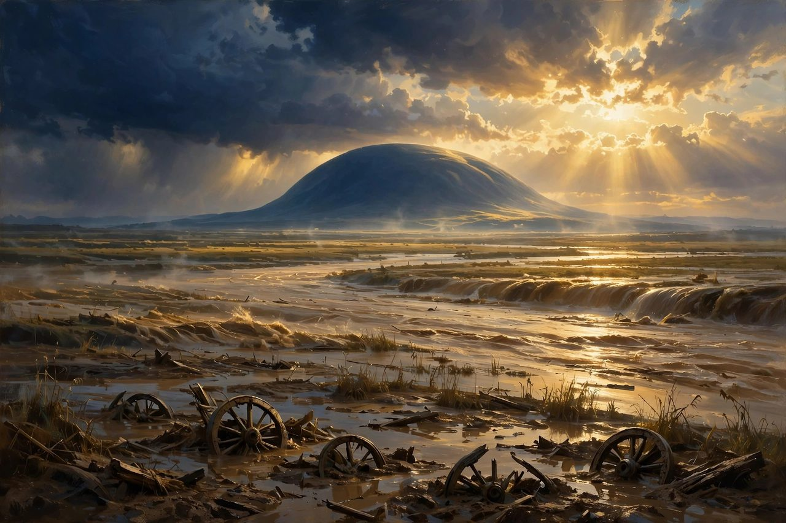
Scripture: Judges 4:6–14; 5:5; Psalm 89:12; Hosea 5:1 The story: Tabor is the distinctive dome-shaped mountain rising alone from the Jezreel plain. There Barak gathered ten thousand men at Deborah's command, then swept down its slopes as God threw Sisera's chariots into panic and gave Israel the victory Deborah sang about. Centuries later Hosea named Tabor as a place where Israel's leaders had become a snare to the people. The meaning: Tabor is the mountain of God's unlikely victories — won not by chariots but by obedience, and sung about afterward in worship. Yet Hosea's warning shows even a mountain of victory can later become a trap when God's people grow proud. What it points to: It points to how God delivers His people through weakness — a judge who was a prophetess, a general who would not go alone — ahead to Christ's victory won through the apparent weakness of the cross.Mount Bashan
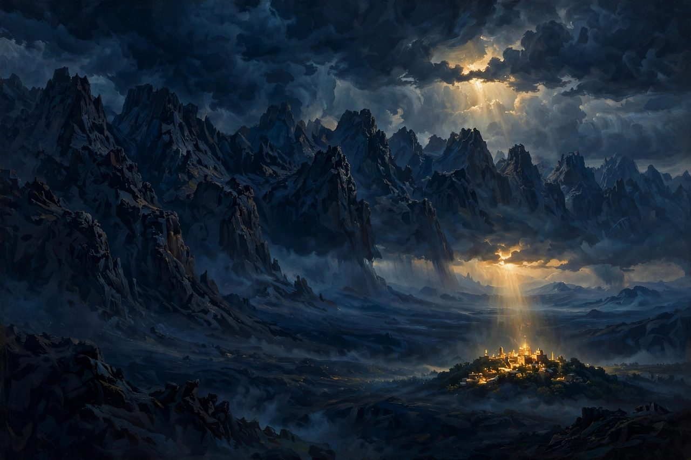
Scripture: Psalm 68:15–16 The story: Bashan, the fertile volcanic highland east of the Jordan ruled by King Og, had mountains "of many peaks" that towered over little Zion. In Psalm 68, David pictures those great peaks looking with hatred at the small mountain God had chosen for His dwelling: "Why do you look with hatred, O many-peaked mountain, at the mount that God desired for his abode?" The meaning: Bashan is the mountain of envied grace. The impressive heights of this world resent that God chose the low and the small — but His choosing stands, and the many peaks cannot vote it down. What it points to: It points to the whole pattern of the gospel: God choosing the foolish and weak to shame the strong (1 Corinthians 1:27), and a kingdom given to a little flock while the mountains of the proud look on.Mount Lebanon
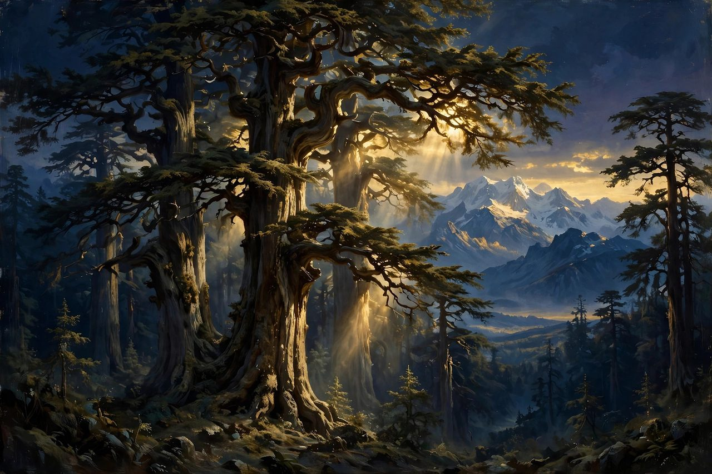
Scripture: Deuteronomy 3:25; Joshua 9:1; 1 Kings 5:6; Psalm 92:12; Isaiah 35:2 The story: Lebanon's snow-topped range crowned Israel's northern horizon, famous above all for its cedars — the mightiest timber of the ancient world. Solomon cut a deal with Hiram of Tyre for Lebanon's cedars to build the temple, and Moses, at the edge of Canaan, begged God, "Let me cross over and see... that good mountain Lebanon." The meaning: Lebanon stands for glory, strength, and permanence — the righteous man "grows like a cedar in Lebanon" (Psalm 92:12) because his roots are in God. Its wood literally housed the presence of God, folded into the temple's beams. What it points to: It points to the strength God plants in His people and to Isaiah's promise that "the glory of Lebanon" would be given to the desert in the day of restoration (Isaiah 35:2) — a down payment on the new creation, where glory covers the low places too.Mount Gilead
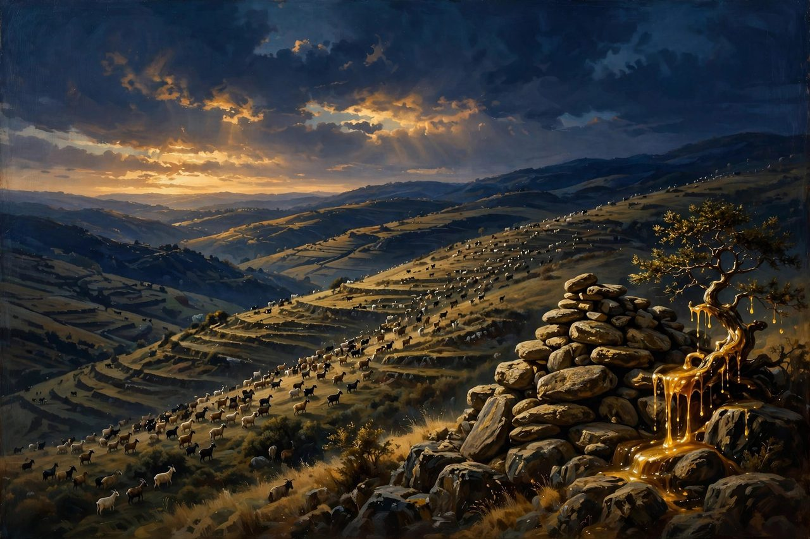
Scripture: Genesis 31:21–25, 44–49; Song of Solomon 4:1; 6:5; Jeremiah 22:6; 46:11; Micah 7:14 The story: In the hill country of Gilead, east of the Jordan, Jacob and his father-in-law Laban ended their years of cheating and chasing with a covenant heap of stones — Galeed — swearing that God would watch between them when they were apart. Gilead became famous for its flocks and for a healing resin, so that Jeremiah asked, "Is there no balm in Gilead? Is there no physician there?" The meaning: Gilead is the mountain of uneasy peace made possible by God's witness — two proud men who could not trust each other submitted to a God who watches both. Its famous balm made it Scripture's symbol of healing for wounded souls. What it points to: Jeremiah's unanswered question points forward to the answer: there IS a balm in Gilead, and His name is Jesus, the Great Physician who heals the sin-sick soul. Micah's prayer for God to shepherd His flock again in Gilead points to that same coming Shepherd.Mount Seir
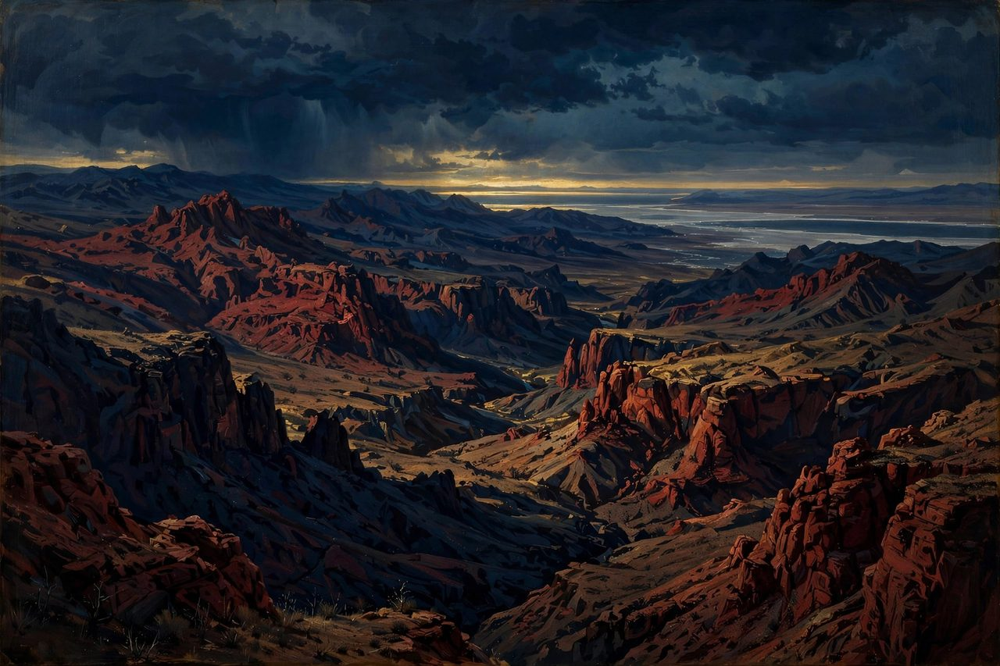
Scripture: Genesis 36:8–9; Deuteronomy 2:1–5; Ezekiel 35 The story: Seir, the rugged mountain range southeast of the Dead Sea, was given by God to Esau and his descendants, the Edomites — God Himself ordered Israel not to touch it on their journey. But Edom nursed its ancient grudge against Jacob's family for centuries, rejoiced over Jerusalem's fall, and so Ezekiel delivered a whole chapter of prophecy against Mount Seir, promising its proud heights would be made desolate. The meaning: Seir is the mountain of cherished bitterness. God had genuinely blessed Edom with a mountain of its own, but a grudge held for generations turned blessing into judgment — pride and hatred toward God's people brought Seir down. What it points to: It points to the human condition itself: near to grace is not the same as received by grace. Esau's descendants had God's gifts and God's nearness and perished on their mountain anyway — a warning every churched generation needs (Hebrews 12:16–17).Mount Perazim
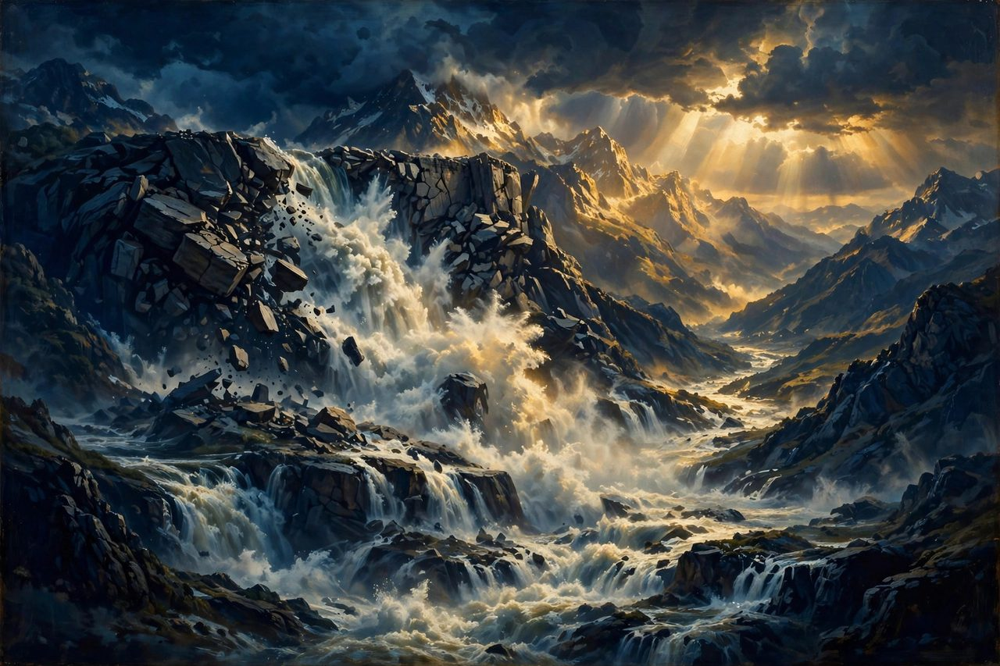
Scripture: 2 Samuel 5:20; Isaiah 28:21 The story: At Baal-perazim, David broke through the Philistines "like a bursting flood" and named the place for God's breakthrough. Isaiah reached back to that mountain victory and warned Judah that the LORD would rise "as at Mount Perazim" to do His "strange work" — this time an act of judgment against His own people, strange because He would wield against them the power He had used for them. The meaning: Perazim teaches that God's power is not a family possession to be presumed on. The breakthrough God who fought for David is the same God who will break through His own people's defenses when they trust in lies. What it points to: It points to the seriousness of the gospel: God is not tame, and yesterday's deliverances are no shield for today's rebellion. The God of Perazim will have a holy people, by mercy — or by judgment.Mount Zemaraim
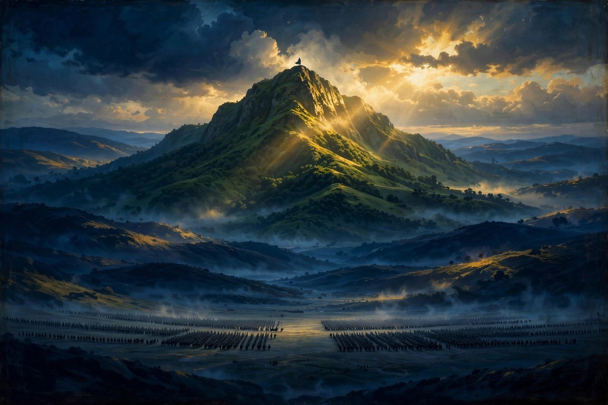
Scripture: 2 Chronicles 13:4–12 The story: On Mount Zemaraim in the hill country of Ephraim, King Abijah of Judah stood and preached to the entire army of Jeroboam, king of Israel, lined up against him twice his size. Abijah rehearsed God's covenant with David and called Israel to lay down their arms because "God is with us at our head." Israel fought anyway, and God gave Judah the victory. The meaning: Zemaraim may be the only mountain in Scripture famous mainly for a sermon preached to an army. It teaches that the Word of God is worth proclaiming even to hostile hearers, and that the outcome of a battle rests with God, not with the headcount. What it points to: It points ahead to the church's whole method: a preached word, a covenant-keeping God, and confidence that "if God is for us, who can be against us" (Romans 8:31) — spoken first from a Judahite mountaintop.The Mount of Olives
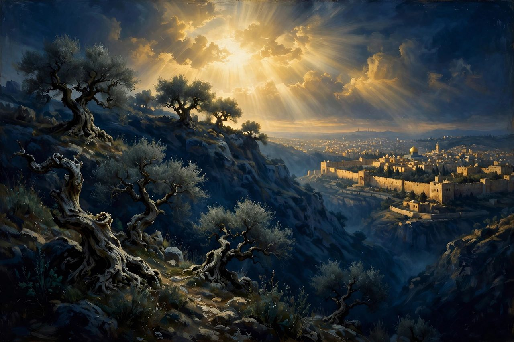
Scripture: 2 Samuel 15:30–32; Ezekiel 11:23; Zechariah 14:4 The story: When Absalom seized Jerusalem, David fled up the Mount of Olives barefoot, weeping as he went, worshiping God at the summit even in his ruin. Centuries later Ezekiel watched the glory of the LORD depart the doomed temple, move east, and stand on "the mountain that is east of the city" — the Mount of Olives — as if God's presence paused and looked back. Zechariah then prophesied the mountain's future: "On that day his feet shall stand on the Mount of Olives... and the Mount of Olives shall be split in two." The meaning: In the Old Testament, Olivet is the mountain of God's departing and returning glory, and of a king humbled in tears yet still worshiping. Where the glory left is where the King will return — God has marked this ridge as the doorway of His comings and goings. What it points to: Zechariah's prophecy points directly to Christ — who would pray, weep, and ascend from this very mountain in the New Testament, and whose feet, the church confesses, will stand on it again at His return.The Holy Mountain of God in Eden
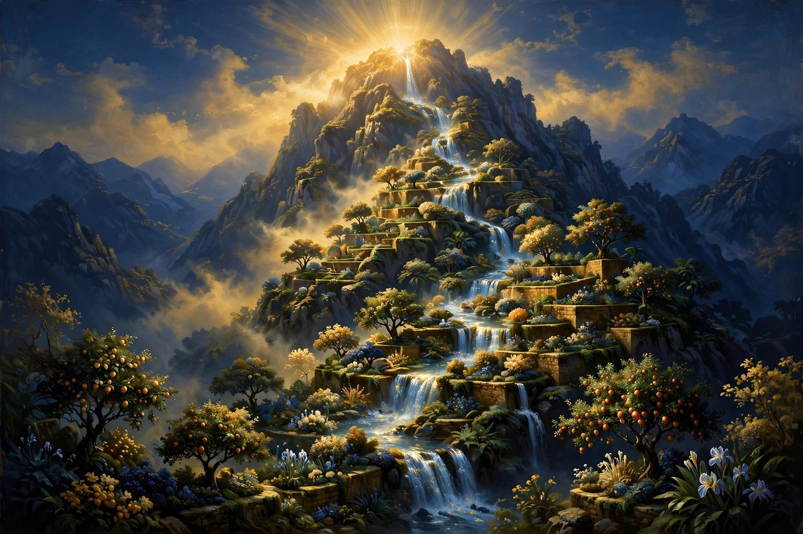
Scripture: Ezekiel 28:13–16 The story: In a prophecy against the king of Tyre, Ezekiel looks behind the arrogant earthly king to a darker figure: an anointed guardian cherub who was in Eden, "on the holy mountain of God," perfect in beauty until unrighteousness was found in him and he was cast from the mountain in fire. The imagery lifts Tyre's fall into the far older story of the first pride and the first fall in the garden God planted. The meaning: This is the mountain of pride's origin. Before there was a fall of man there was a fall by pride in heaven's courts — splendor itself, unguarded by humility, became the doorway of evil into the world. What it points to: It points to why the whole human race is the way it is: we fell in Eden under the influence of the one cast down from this mountain. And it points to Christ, the second Adam, who faced this same enemy in the wilderness and did not bow.Mount Zaphon / The Mount of Assembly
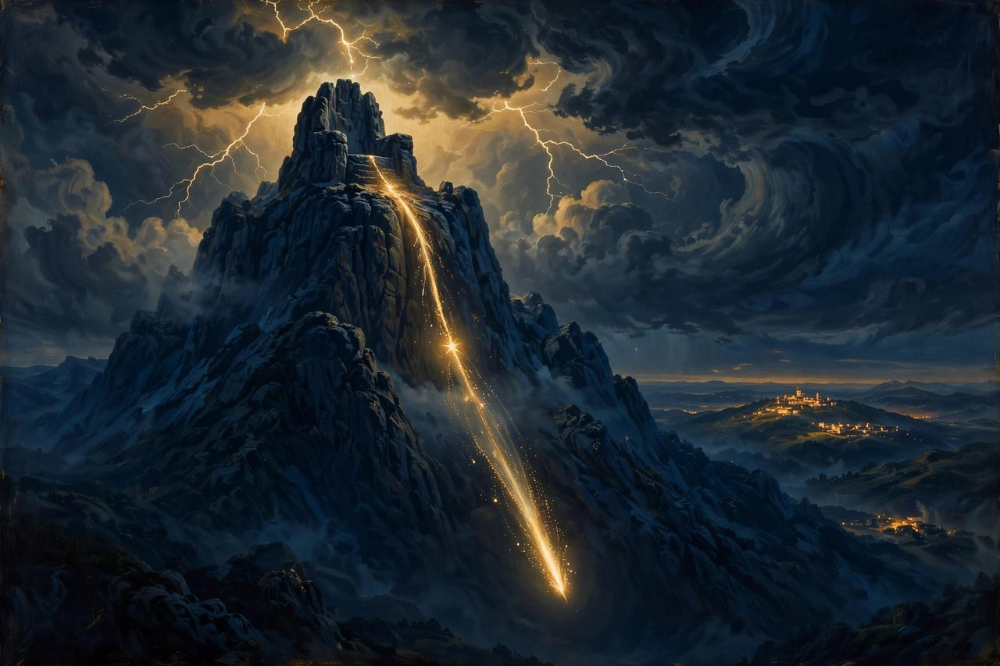
Scripture: Isaiah 14:13–14; Psalm 48:2 The story: Zaphon, a real mountain north of Israel (modern Jebel Aqra), was famed in the surrounding nations as the dwelling and assembly place of the gods. Isaiah puts its boast in the mouth of Babylon's proud king: "I will ascend to heaven; above the stars of God I will set my throne on high; I will sit on the mount of assembly in the far reaches of the north... I will make myself like the Most High." Psalm 48 answers that boast by calling Zion itself "the far reaches of the north" — God's city outranks every rival mountain. The meaning: Zaphon is the mountain every proud heart tries to climb: the throne that belongs to God alone. Isaiah's taunt shows the whole tragedy of pride in five "I wills" — and its end: "But you are brought down to Sheol." What it points to: It points to the temptation put to Jesus — all the kingdoms, without the cross — and to Christ's refusal of it. It also points to the destiny of two mountains: the proud one man built falls; the humble one God chose stands forever.The Mountains of Israel
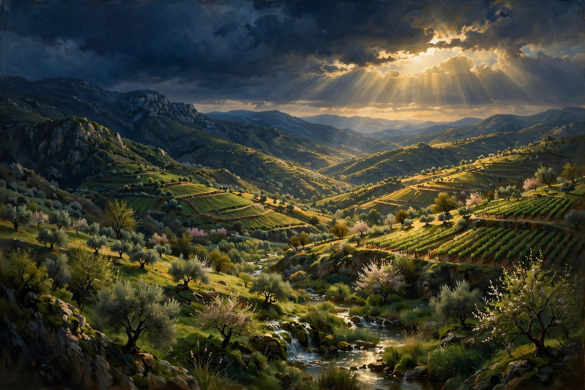
Scripture: Ezekiel 6:2–3; 36:1–15; 39:2–4, 17 The story: Ezekiel did something no prophet had done at such length: he preached sermons to the mountains of Israel as if they were a congregation. First came judgment — the high places on those mountains would be desolate because of idolatry. Then came the astonishing reversal: "But you, O mountains of Israel, shall shoot forth your branches and yield your fruit to my people Israel" — the same hills, barren under judgment, promised fruitfulness because God's people were coming home and His name would be hallowed there. The meaning: These sermons teach that God's covenant touches even the land, and that God's judgment and God's restoration can fall on the very same ground. The mountains that heard the sentence also heard the pardon — God does not abandon places or peoples He has judged when His mercy has the last word. What it points to: It points ahead to the restoration of Israel and, through it, to the renewal of all creation — the day when the whole earth, mountains included, is fruitful again under the returned King, and His people are home for good.← Series index · Series index · Next part →
The Hope Connection
Meeting others where they are in the Name of Jesus — testimony and teaching on the hope that holds.